00读前一分钟 · 全文脉络（做完题再看也行）
📌 结构套路：引子（① 古董店的旧物 ⟹ 有形）→ 转题（②❶ 设问：那无形的呢？）→ 对比（②❷–❹ 有形为什么活得下来）→ 难点（③ 没人管 · ④ 格式过时）→ 作者表态（⑤ 难但可为）。五题完全顺序：36①、37②、38③、39④、40 全文。和 T3 一样一题一段，但这篇的作者到⑤段才现身，前四段全靠设问（Why? · Have you pondered…? · Who curates…? · Have you ever stared…?）推进——每个问号后面都是作者要说的话。
📌 本篇最值钱的一条规律：对比题的四个比较级，先查「原文比过没有」。37 题四项全是比较级（less subject · more direct · more intentional · less likely），可②段对有形制品只说了两件事：造它的人疏于保存、它本身就是信息的载体。给每个选项写出比较维度，回原文给「有形」「数字」两栏各填一格：A（被疏忽程度）两栏都没比；C（需要刻意保存）方向反——有形的偏偏没被刻意保存也留下来了，需要更多照料的是数字（③❺）；D（易损程度）原文没说；只有 B（传递信息的方式）两栏都有料：实物 ＝ 媒介，数字 ＝ 只是载体（④❶）⟹ 新立 R323。
📌 和 2025 T1–T3 比一比：T1 研究报道、T2 第一人称评论、T3 数字型问题报道、T4 从业者的现身说法。T4 的作者声音是「先藏后露」：前四段用设问和「我们」把读者拉进来，到⑤❶ 才说「我就是馆员」——所以 38 题的 us 指的是图书馆这一方，不是读者，更不是研究者。
01原文精读
🟡 黄色高亮 = 重难点词/短语，点击右侧出卡片 ｜ 蓝色虚线 = 长难句，点击跳到精析 ｜ 每段「意」= 段落意译 ｜ 选中任意其他单词浮出「查有道」 ｜ 原文由你的浏览器从原卷识别成文字（首次约 3 秒，之后秒开）；「原卷对照」可逐句看扫描原图、改识别错字
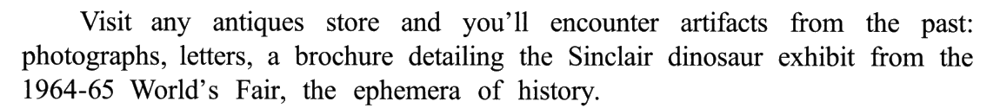
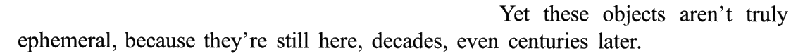
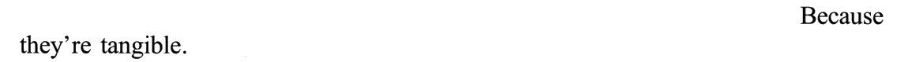
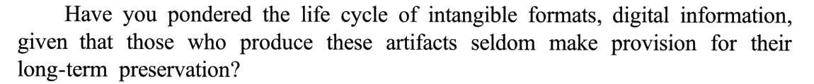
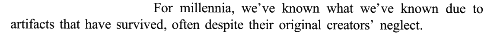
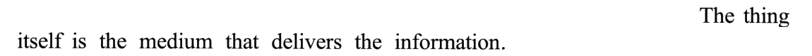
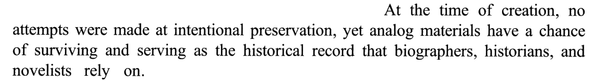
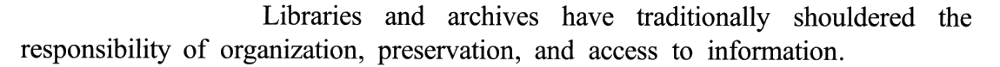
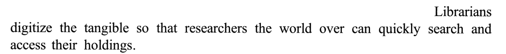
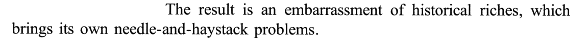
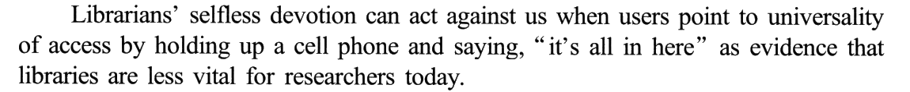
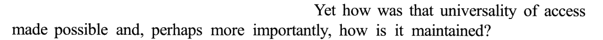
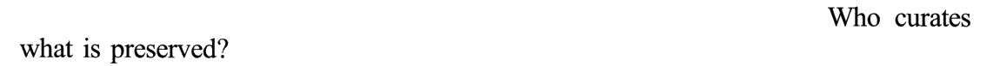
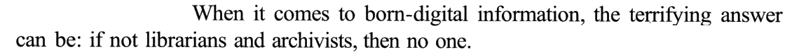
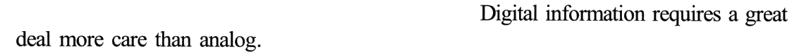
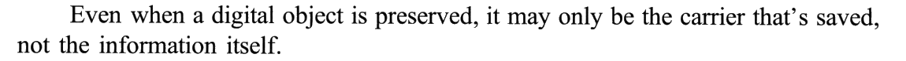
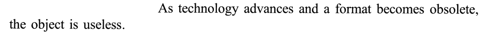
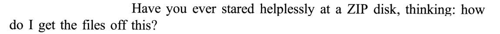
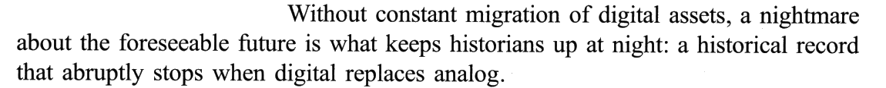
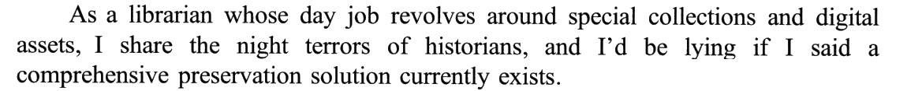
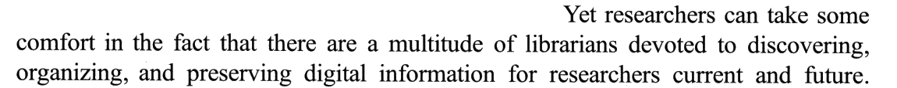
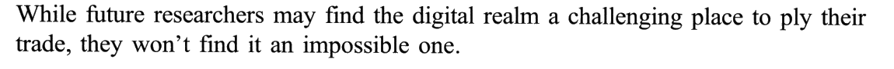
02题目与解析（点选项即判 · 再看解析）
写作目的36. The author mentions the artifacts from the past to ______.
干扰项：A 借❶ 的 antiques store 造「介绍古董收藏」——古董店只是取景地，文章一句都没谈收藏本身。B 借❶ 那串 photographs, letters, a brochure 造「与日常物品对比」——这些东西在文中是有史料价值的人工制品，不是被拿来跟日常用品比的另一方；全文真正的对比是有形 vs 数字。D 借 the ephemera of history 造「评论历史价值」——可❷ 马上用 aren’t truly ephemeral 把重心拧到了「短暂 vs 长存」，讲的是留不留得住，不是值不值钱。
技巧：首段旧物、轶事题，答案不在旧物身上，在它被拿来引出的那个话题（R16）：顺着①的 Yet … because … Why? Because … 走到底，再看下一段段首接了什么。
💡 ephemera 一词四用：它兼有「短命之物」「原本只图一时之用、后来成了藏品的纪念品」「（不值钱的）日用品」几层意思——A 吃「收藏」、B 吃「日用品」、D 吃「历史」、C 吃「（留不留得）存」，四个选项都能从这一个词里找到出处，只有 C 是作者用 Yet 句拧过去的那层。
📕 与书解析的商榷：无分歧。书用「论据（❶）—论点（❷）—论据（❸❹）」来划分，结论相同。
对比细节37. Compared with digital objects, tangible artifacts ______.
干扰项（逐栏核）：A「更少被创造者疏忽」：②❷ 说有形制品 often despite their original creators’ neglect 而留存——它们照样被疏忽了，只是被疏忽了也活了下来；原文没比两者谁更受冷落，「有形」那格甚至写着「被疏忽」。C「需要更多刻意保存」：方向反——②❹ no attempts were made at intentional preservation，有形的东西恰恰是没被刻意保存也留下来了；需要更多照料的是数字（③❺ requires a great deal more care than analog）。D「更不容易严重受损」：两栏都空——原文讲的是信息会不会随格式过时而丢，从没比过实物和数字谁更容易坏；把「数字信息容易丢」脑补成「数字物品容易损坏」，是偷换了对象。
技巧：Compared with X, Y ___ 这类题，四个比较级先各写出比较维度，再回原文给 X、Y 两栏填格——一栏空着 ＝ 原文没比，两栏有料但方向反 ＝ 反着用，两栏都有料、方向也对的才是答案；它往往就是原文那句「本质差别句」（The thing itself is the medium）的改写 ⟹ 新立 R323。定位难时用题文同序：36 在①、38 在③，37 只能在②。
📕 与书解析的商榷：结论相同。书用「文中并未对比……的程度」同时排除 A 和 C；对 C 补一条更硬的判据：它不只是「没比」，而是方向反——原文明说有形的东西没被刻意保存也留下来了，需要更多照料的是数字（③❺），C 恰好把两栏对调了。
因果细节38. According to Paragraph 3, librarians’ work may result in ______.
干扰项：A 借②段末 an embarrassment of historical riches 造「资料供应过剩」——一来不在题干限定的第三段；二来 embarrassment of riches 是「好东西多到挑花眼」，带着褒义，oversupply 是「多到超出需要」，带着贬义，色彩不同。C 拿③❶ less vital for researchers 和③❹ if not librarians …, then no one 望文生义，编出「研究者表现不佳」——原文说的是图书馆对研究者不重要了，不是研究者干得不好；主体从「图书馆」挪到了「研究者」。D 看起来贴着「举起手机」，可原文的意思是用户不再觉得图书馆重要，不是在批评用户离不开技术；overreliance 的贬义在文中无据，作者批评的是「看轻图书馆」这个结论。
技巧：因果题沿因果链走到末端（R5）：can act against us 只是「暗示有坏结果」，as evidence that … 后面才是明示的结果，答案取后者。再核主体：③❶ 吃亏的是 us——作者在⑤❶ 才自报是馆员，回头看，这个 us 就是图书馆这一方。
📕 与书解析的商榷：结论相同。书排 C 用的是「两处文意被误读」，更快的判据是主体：题干问馆员工作的后果，③段里受损的是图书馆（us），选项 C 的主语却换成了研究者（R21）。
写作目的39. The “ZIP disk” is cited as an example to show ______.
干扰项：A 把「怎么才能把文件弄出来」曲解成「用非常规手段取回文件有风险」——原文的难处在格式过时，不在手段非常规；原文也没说取文件危险，只说取不出来。B 把❹ Without constant migration of digital assets 读反了：Without … 是条件（不迁移 ⟹ 噩梦），等于说「必须持续迁移」，迁移是出路，不是「不可行」。D 换了对象：原文为之担忧的是数字格式，模拟（analog）在④❹ 里恰恰是那个「被取代后记录就断了」的、更靠得住的一方；「模拟存储不方便」也许是常识，但不是作者在这里要说的。
技巧：例子题的答案在例子服务的论点句里（R41）。论点句的信号这里有两个：Even when … it may only be X, not Y（强调＋取舍：载体，不是信息）和 As … becomes obsolete, … is useless（判断）。选项 C 的 losing information ＝ not the information itself，obsolete formats ＝ a format becomes obsolete，一一对上。
📕 与书解析的商榷：无分歧。书把 ZIP disk 译作「压缩磁盘」，严格说 Zip 是 Iomega 公司 1994–95 年推出的可移动磁盘的品牌名（初版 100MB，2003 年前后停产），不是「压缩」的意思——它恰好是「格式过时」最贴切的实物，不影响答案（背景见 00）。
文章主旨40. Which of the following statements best summarizes the text?
干扰项：A 最像：preserve 是全文高频词，可它的宾语写成了 artifacts（人工制品），一下泛到了①段古董店里那些有形的东西——而文章说的恰恰是有形的东西不用费力也能留下来，要费大力气的是数字的；A 的范围宽了一圈，还把重心放错了地方。B 只抓住⑤❷ 的 a multitude of librarians devoted to：馆员的付出是作者给研究者的「安慰」，是数字保存这个难题里的一个配角；而且全文没有一句「应当被认可」的呼吁。C 只抓住②❻ 的「研究者能快速检索馆藏」和③❶ 的「随处可得」，数据库连原词都没出现，「访问数据库至关重要」更是作者想反驳的那种看法（「全在手机里」）的变体。
技巧：主旨题先纵向归纳全文高频词（preservation／preserved／preserving · digital information／born-digital／digital object／digital assets），排掉不含线索的 B、C；剩下 A、D 都含 preserve 时，比宾语的范围：artifacts 泛指一切人工制品，digital historical records 正好是全文的论述对象（R125：两项共享话题词时，拆开比中心词后面的那一截）。
⚠️ 独立作答时 A／D 犹豫过：A 的 hard work … preserve 很贴合「数字信息需要多得多的照料」。判据就是那个宾语——全文的一半篇幅（①②）是在说有形制品不用费力也能活下来，拿 artifacts 当全文对象，等于把作者拿来做对照的那一方当成了主角。
📕 与书解析的商榷：无分歧，书也是「保留话题契合的 A、D，A 更宽泛 ⟹ 取 D」。
03长难句精析（正文蓝色虚线句）
- 句式 祈使句 ＋ and ＋ 陈述句：
Visit any antiques store and you’ll encounter …＝「只要你去……，就会……」，祈使句在这里相当于条件状语（＝ If you visit …）。 - 主干：
you’ll encounter artifacts from the past，冒号后列举 artifacts 的具体例子。 - 列举的第三项最长：
a brochure detailing …——detailing 是现在分词作后置定语（「详细介绍……的小册子」），一直管到 1964-65 World’s Fair。 - 列举最后一项
the ephemera of history不是第四样东西，而是给前面三样贴的总标签（同位语）——「这些都是历史的短时藏品」。⭐ 下一句马上用 ephemeral 去否定它，36 题的枢纽就在这里。
- 主干：
these objects aren’t truly ephemeral，because 引导原因状语从句。 - ⭐ ephemera → ephemeral：上一句的名词刚给它们贴了「短命」的标签，这一句用同根形容词加 aren’t truly 撕下来——同根词一正一反，是作者拧转话题的手法。
still here, decades, even centuries later：decades 和 centuries 由 even 递进，later 同时修饰两者——「几十年、甚至几百年之后」。- 后面 ❸❹ 两句自问自答：Why? Because they’re tangible.——「有形」是全段的答案，也是②段要拿来与「无形」对比的那一端。
- 主干：
Have you pondered the life cycle of intangible formats——一般疑问句，但不是真的问读者，而是设问：作者借它把话题从①的「有形」转到「无形」。 intangible formats, digital information：逗号后的 digital information 是 intangible formats 的同位语，作者自己解释了「无形的格式」指什么。given that …：「考虑到、鉴于」，引导原因状语从句；从句主语those who produce these artifacts带一个 who 定语从句，谓语是seldom make provision for（很少为……做打算）。- ⚠️ 中文要倒过来译：先译 given that 的原因，再译设问——「鉴于……很少为其长期保存做准备，你是否想过……」。
- 主干：
we’ve known what we’ve known——第一个 known 是谓语，what we’ve known是宾语从句：「我们已知道我们所知道的」，意思是「我们对过去的全部了解」。 due to artifacts that have survived：due to 表原因，后接 that 定语从句——「靠的是留存下来的人工制品」。often despite their original creators’ neglect：despite 是介词，后接名词 neglect；修饰 survived——「往往是在创造者疏忽的情况下留存的」。- ⭐ 37 题 A 就出自这里：有形的东西也被疏忽了，只是被疏忽了还活着——原文没比「谁更受疏忽」。
- 两个分句由 yet 转折：前一句
no attempts were made at intentional preservation（make an attempt at：尝试做……，这里是被动、主语是 no attempts）；后一句analog materials have a chance of surviving and serving as …。 - have a chance of 后接两个并列动名词
surviving和serving as the historical record。 - record 后接定语从句
that biographers, historians, and novelists rely on——that 在从句里作 rely on 的宾语，介词 on 留在句尾。 - ⭐ 37 题 C 的反证就在前一个分句：有形的东西没人刻意保存也留下来了 ⟹ 需要更多刻意保存的是数字，不是有形制品。
- 主干：
The result is an embarrassment of historical riches——系表结构。 an embarrassment of riches是固定说法：好东西多到让人不知如何是好，中间插进 historical 限定是「史料」。褒义打底、带点无奈，不是「尴尬」。which brings its own needle-and-haystack problems：非限制性定语从句，先行词是前面整个 embarrassment of riches；its own 强调「这份丰富自带的麻烦」。- needle-and-haystack 由 look for a needle in a haystack（大海捞针）压缩成复合形容词。⚠️ 38 题 A 把 embarrassment of riches 换成贬义的 oversupply，还挪到了第三段。
- 主干：
Librarians’ selfless devotion can act against us——act against：对……不利。 - when 从句：
when users point to universality of access——point to 「指出、拿……当理由」；by holding up a cell phone and saying, …是方式状语，引号里是用户的原话。 - 句尾
as evidence that libraries are less vital for researchers today：as evidence 管的是 point to 的宾语（拿「随处可得」当证据）；that 引导 evidence 的同位语从句，说明证据的内容。 - ⭐ 因果链：馆员的付出 → 信息随处可得 → 被当成「图书馆不重要了」的证据 ⟹ 38 题 B「图书馆被低估」。us 是图书馆这一方（作者⑤❶ 才说自己是馆员）。
When it comes to born-digital information：when it comes to ＋ 名词／动名词，「说到、涉及……」，to 是介词。- 主干：
the terrifying answer can be，冒号后给出答案的内容。 - 冒号后
if not librarians and archivists, then no one是省略句，补全为 If (it is) not librarians and archivists (who curate it), then (it is) no one——「不是他们，就没人」。 - born-digital「原生数字的」：一生下来就是数字形式（电子邮件、网页、数码照片），对照②❻ 馆员把有形的东西「数字化」（digitize the tangible）——后者原件还在，前者没有原件，丢了就是真丢了。
Even when a digital object is preserved：even when 让步兼时间——「即便……的时候」。- 主干：
it may only be the carrier that’s saved——强调句 it is … that … 的变体（插进了 may only），被强调的是 the carrier。 - 句尾
not the information itself：和 the carrier 构成 X, not Y 的取舍——保住的是载体，不是信息。 - ⭐ 这是 37、39 两题共用的一句：与②❸ 的 the thing itself is the medium 对照，有形的「东西即信息」、数字的「东西只是壳」（37B）；格式过时，壳在信息没（39C）。
- 句首
Without constant migration of digital assets：without 短语表条件（＝ If there is no constant migration …）——39 题 B 把条件读成了「迁移不可行」。 - 主干：
a nightmare … is what keeps historians up at night——主语 a nightmare（带 about the foreseeable future 作定语），表语是 what 引导的从句；keep sb up at night：让人夜里睡不着。 - 冒号后
a historical record that abruptly stops …：解释噩梦的内容，是 nightmare 的同位语；that 定语从句里再套一个 when 从句 when digital replaces analog。 - 注意 replace 的方向：digital replaces analog＝数字取代模拟——记录断在「换成数字」的那一刻，所以靠得住的反而是模拟（39 题 D 把对象换反）。
- 句首
As a librarian whose day job revolves around …：as 是介词「作为」；whose 引导定语从句修饰 librarian。 - 两个并列分句：
I share the night terrors of historians（呼应④❹ 的 keeps historians up at night）和I’d be lying if I said …。 I’d be lying if I said a comprehensive preservation solution currently exists：虚拟语气（would be ＋ if 过去式），字面「我要是说……就是在撒谎」⟹ 实际意思是「目前并没有全面的保存方案」——用否定虚拟来坦白。- ⭐ 作者第一次亮明身份：前面 38 题的 us 至此坐实是图书馆这一方。
- While 让步 ＋ 主句：让步
future researchers may find the digital realm a challenging place …，主句they won’t find it an impossible one。 - 两处都是 find ＋ 宾语 ＋ 宾补：find the digital realm a challenging place / find it an impossible one；one 替代 place。
to ply their trade：不定式作 place 的定语——「从事本行的地方」；ply one’s trade 是固定说法（干自己那一行）。- ⭐ 全文收尾的定性：challenging, but not impossible ⟹ 40 题 D 的 a challenge 就出自这里；主句的「不是不可能」是给研究者的宽慰，不改变「难」的判断。
04词汇复盘（点卡片看详情）
05可搬进作文/翻译的素材
本篇话题——数字时代的代价、传统机构的价值、文化遗产保护——正对大作文里的「数字化利弊」「图书馆／博物馆还有用吗」「传承与创新」类题目；「设问引出 → 对比 → 难点 → 坦白但不悲观」的骨架则适合议论文的开头与收尾。英文例句都是按原文句式自拟的，只借骨架。